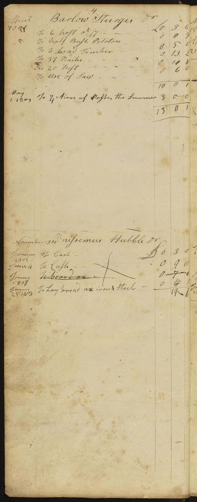

1801 - 1819 Merchant and Shipping
Account Log Book from Fairfield, Connecticut
Table of Contents

Account of Materials for Building
2000 feet
boards at 19 Dollars
11 8
0
900 feet boards at 15 dollars
4 0 0
Joiners Bill
Fraiming
Framing
& Covering Barn 9 18 0
Fraime
Frame
for Barn
15 0 0
Cake for
Raising 0 13
0
8 Pound fourpenny
Nails for Shop 0 8 8
6 Pound fourpenny Hens for Shop
0 6 0
2 Hundred oak
Boards for Shop
0 4 0
2 Thousand
Shingles
2 0 0
Frame for
House
0 4 0
Frame for
Shop
3 6 0
Bought of
Daniel Gregory &
Shouland Brick at 5 Dollars Thousand & paid him Forty Dollars
February 10 1802
12 0
0
6 pound
Hens
0 6 0
one Thousand
Shingles for Shop 0 18 0
half Thousand
Shingles for Shop
0 9 0
one & half pound
0 1 3
Five
hundred
9
feet Boards
2 5 0
5 2/1 Thousand 3 feet
Shingles
27 0 0
6 thousand 2 feet at
3
Dollars
14 8 0
Nailes
Nails
7 10 0
glass - 25 dollars
7 10
0 Carting brick
4 0 0
Joiners & Mason bills 48 0 0 Paid
Nailes
Nails
&Glass
1 1 0/
Nailes
Nails
6 0 0
Stone
12 0
0
Stone
8 0
0 15 Hundred feed Boards
7 0
0 Making Fence & Nailes 4 0 0 paints &
15 0
0
Stones &
2 10
0 Drying
5 0
0 floor Boards 6
Nailes
Nails
for floor & inside work
3 0
0hinges for Doors
1 10 --
Boards of Short
Shingles
2 thousand
Brick
10 10
Boarding
& bill
30 0
0

October 1801
Nathaniel Burr
Mary
Squire
5 wool to hay of Bartramwoolsold July 18 1809
T Bartram
41 1/4
2/9 Paid
Squire
6 6
2/9 Hanna Burr
30
2/9 Paid Eben Bartram 26 3/4 No hay 600 John Wheeler
10 No hay
120Job Bartram 8 2/1 paid
420Joseph Sturges
4 2/ paid 818Andrew Wakemen 3 paid
30Andrew MaClery 10 paid 700Eathan Shearwood 6 2/ paid David Judson
18 /
No> hay 3 No hay Joseph Sturges and others 65
1/4 paidJoseph Perry 20 2/4
paidM Risley
4 No> hay paidWill Thorp 6
No hayDavid Hubble
7 1/4 paidWill Thorp 2
Capt allen
5 1/4 paidDavid Bradley19 paidBradley Bulkley18 paid
October 1801 Credit
By Shewing one yoak oxen by iron & help
By
Seting
Setting
ox my help
1685 Cash
222 Dollars
cash
gave Seth Perry
1907 to go to N york to
by
buy
cargo
John Wheeler
Five albany Boards
1/3 Board
0 6 3
Six pound Butter at
1/1
0 6 3
Four qrt Butter at 1/
0 4 3
one cow at 20
Dollars
6 0 0
Fix Plow Plates
0 0 6
interest on Twenty Dollars 4 2/4 Month 0 2 6
Shearp
Sharpen
0 1 0
Plow 2 Days
Cash 4 Dollars
1 4 0
Due on Due bill when Settled April 6,
1802
2 1 9
Thousand Lath
0 9 0
Ballance
Balance
Books January 9 1804
5:3:6
Credit
By one Bush Rye By Carting one load wood By veal 1/9 to horse to NewfieldBy Carting Brick
4 0
0By Cash & other Materials 1 3 9
Ballance
Balance
Books 5
3 9
Daniel S Mefser
February 3 1801
one ton English Hay 4 0 0
Credit
Cash
9 0 0
one pair Boot Legs for women 0 5 6
Taning & Curring 3
Hides
0

Barlow Sturges
April 1801
To 6 at /7
0 3
6
To half
Bush
Bushel
PotatoesTo 3 Load Timber 0 13 2
To 37 Nailes 0
11 8To 20
0 6
0To use of Saw
Credit
by Cash 1 0 0
by Cash 10 0 1
Daniel Osborn
To iron
Compleat
Complete
1 1
To 4 Bush Seed wheat at 12/ 2 3 To 20 of Flax at /8 0 13 To Set a
Shew
Shoe
0 2
To 10 3/4 of Flax at 1/ Per
Pou
Pound
0 10
To 9 of Flax at 1/ 0 9 To 5 Dollars Paid Smith Stone Cutter 1 10